CSS gradient is used to display smooth transition within two or more specified colors.
These are the following reasons to use CSS gradient.
There are two types of gradient in CSS3.
The CSS3 linear gradient goes up/down/left/right and diagonally. To create a CSS3 linear gradient, you must have to define two or more color stops. The color stops are the colors which are used to create a smooth transition. Starting point and direction can also be added along with the gradient effect.
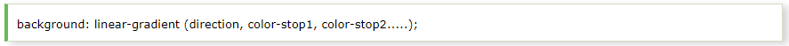Top to Bottom Linear Gradient is the default linear gradient. Let's take an example of linear gradient that starts from top. It starts red and transitions to green.
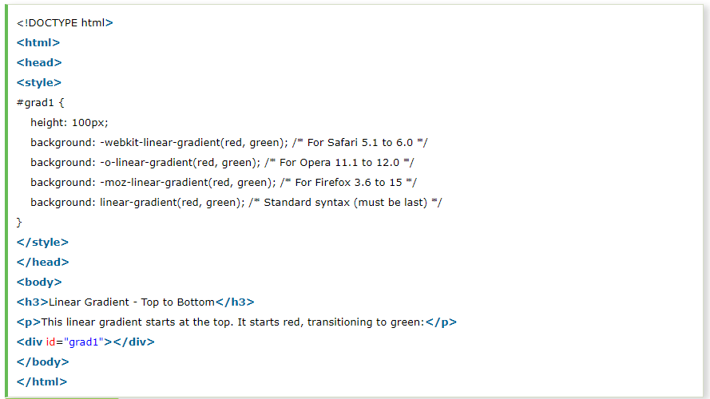Output:
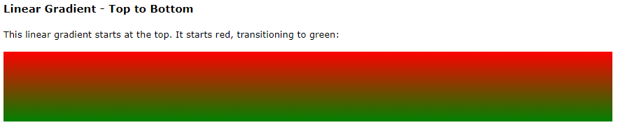The following example shows the linear gradient that starts from left and goes to right. It starts red from left side and transitioning to green.
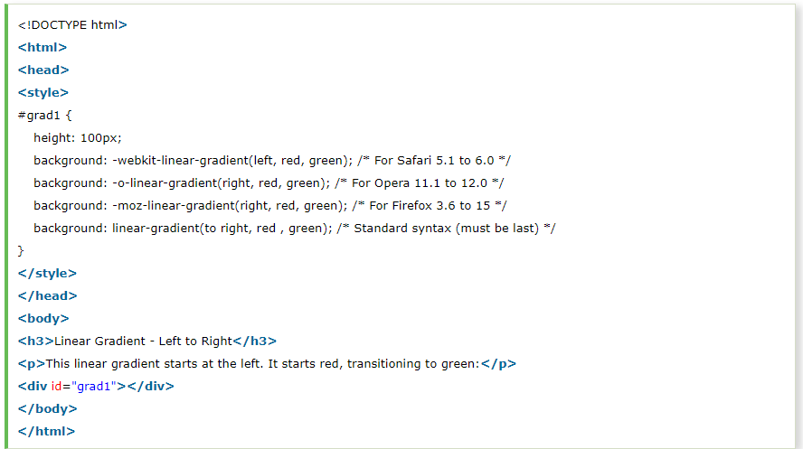Output:
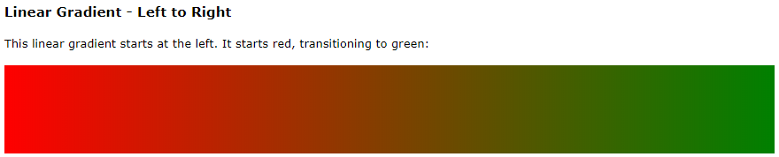If you specify both the horizontal and vertical starting positions, you can make a linear gradient diagonal.
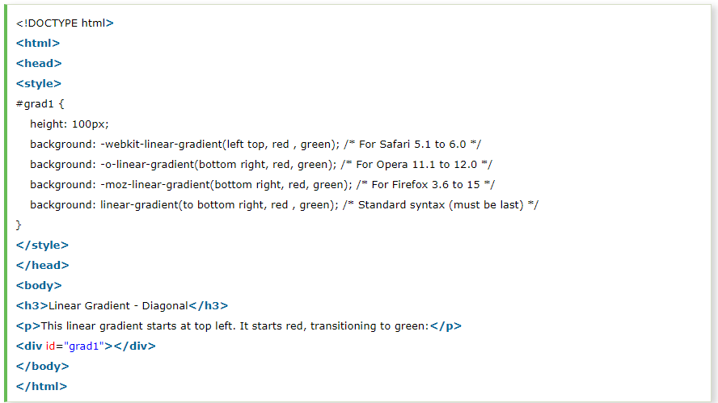Output:
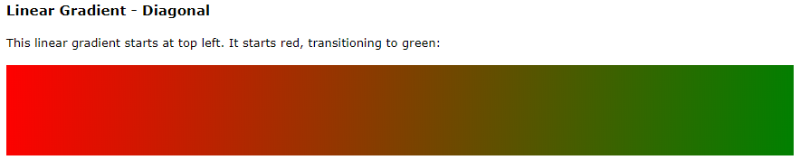You must have to define at least two color stops to create a radial gradient. It is defined by its center.
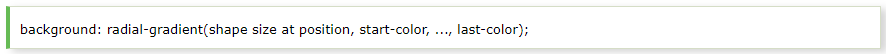Evenly spaced color stops is a by default radial gradient. Its by default shape is eclipse, size is farthest- carner, and position is center.
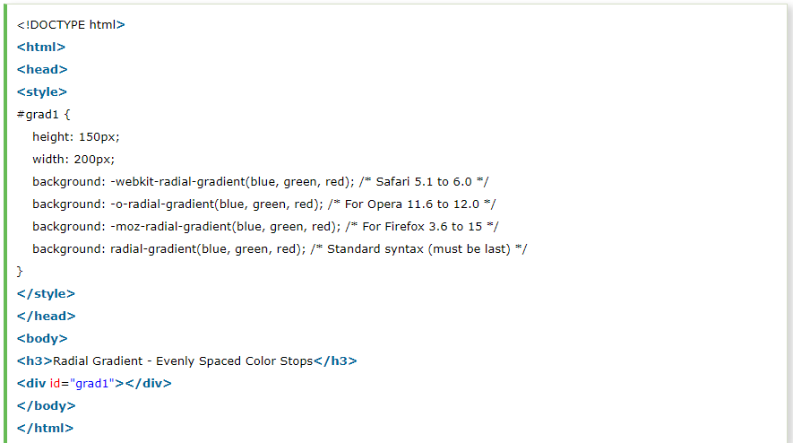Output:
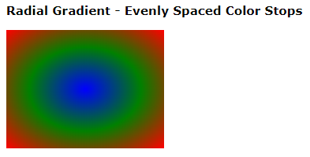Output:
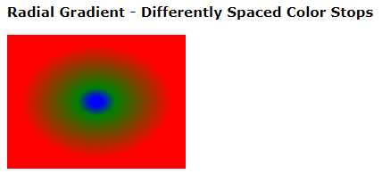This table specify the first browser version that fully supports the gradient property.
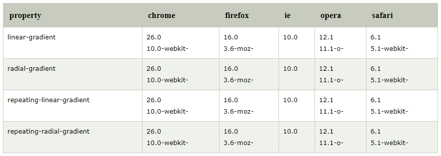